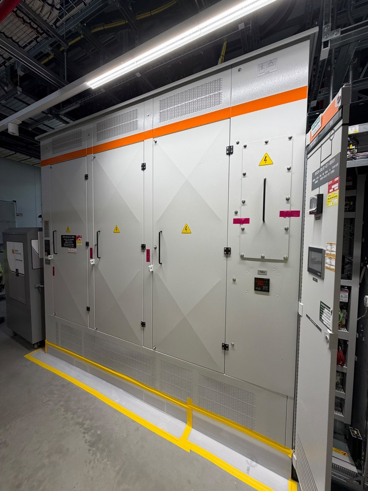

Utility asset replacement
HV asset replacement and network refurbishment
Powertec has delivered asset replacement and network refurbishment programmes requiring the mobilisation of HV fitters, cable jointers and logistics support, with combined project manager and SAP accountability.
- Programme mobilisation
- Specialist resourcing
- SAP duties
- Safety leadership
- Commercial control
- Logistics
- Contractor management
- Client interfaces

European critical infrastructure
Data centre testing, commissioning and energisation
Current data centre work centres on electrical testing, commissioning, progressive energisation and safe systems of work across a complex live network, as part of a specialist SAP team.
- Testing control
- Safety documents
- Isolation and earthing
- Permit holder monitoring
- Critical power interfaces
- Integrated systems testing
- Load testing interfaces
- Operational handover